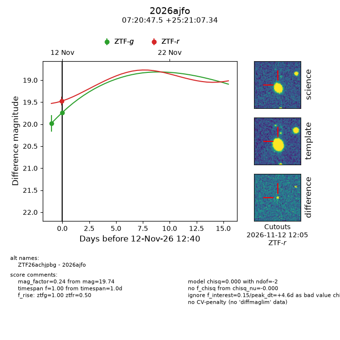
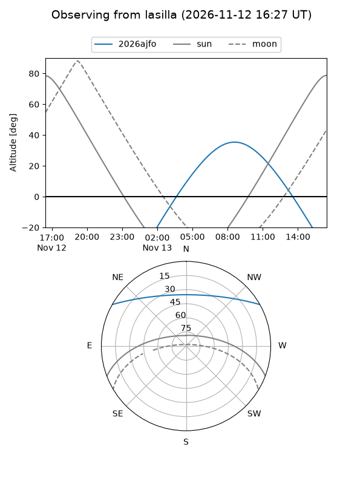
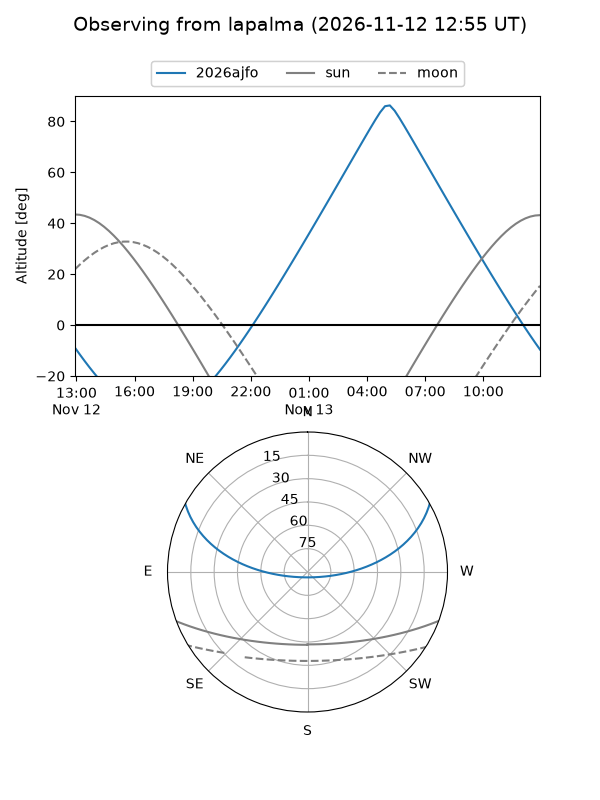
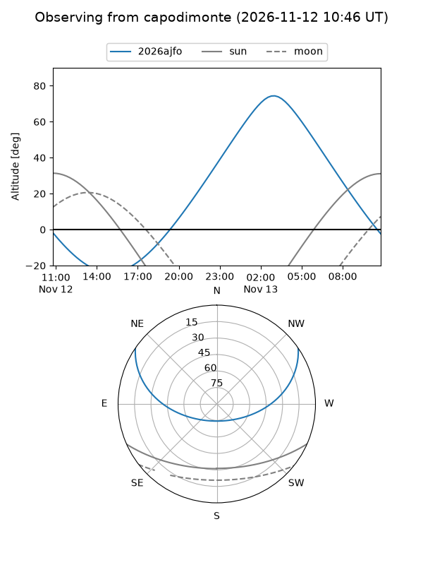
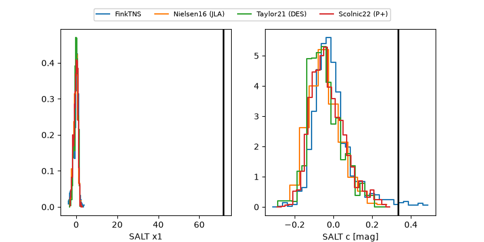

2026ajfo
Target 2026ajfo at 2026-11-12 12:42
Aliases and brokers:
FINK-ZTF: ztf.fink-portal.org/ZTF26achjpbg
Lasair-ZTF: lasair-ztf.lsst.ac.uk/objects/ZTF26achjpbg
ALeRCE-ZTF: alerce.online/object/ZTF26achjpbg
YSE-PZ: ziggy.ucolick.org/yse/transient_detail/2026ajfo
TNS name: wis-tns.org/object/2026ajfo
Direct TNS query: direct search
alt names
ZTF26achjpbg (ztf,fink_ztf)
2026ajfo (tns,yse)
Coordinates:
equatorial (ra, dec) = 110.1981,+25.35204
equatorial (HMS+DMS) = 07:20:47.54,+25:21:07.34
galactic (l, b) = (192.8070,+17.33603)
Flags:
peak dt: +4.6
Photometry:
last ztfg=19.74, ztfr=19.48
2 ztfg, 1 ztfr detections
Lightcurve

Visibility



Additional plots
